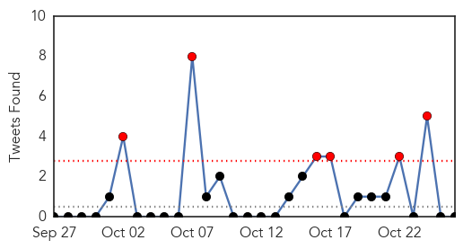

30 Day Trends
Web: 0 alerts, 0 warnings
Twitter: 6 alerts, 0 warnings
Top Articles:
- 0.917
- Chicago Tribune
- 0.917
- Chicago Tribune
- 0.917
- Chicago Tribune
- 0.917
- Chicago Tribune
- 0.917
- Chicago Tribune
- 0.910
- The world windows to Thailand
- 0.909
- WHO revises global tuberculosis estimate up by 500,000
- 0.883
- UN Mission for Ebola Emergency Response (UNMEER) External Situation Report, 24 October 2014 - Liberia
- 0.867
- Enterovirus D68 Confirmed in Santa Barbara
- 0.866
- Ukraine president to start talks on parliamentary coalition on Monday
- 0.866
- Iraq Kurds will not engage in direct combat in Kobani, to provide artillery support-officials
- 0.866
- State quarantines are due to "absence of federal leadership"- Republican lawmaker
- 0.866
- Taxiing German plane clips control tower in Algeria, no injuries
- 0.706
- Guest Column: Don't reject more than a half-century of improved health
- 0.615
- "Despite All the Risks, We Are Still Committed" - Central African Republic
- 0.542
- 145 Suffer Eye Injuries During Diwali
- 0.518
- Christie Defends Ebola Quarantine: Public Safety Is ‘Government’s Job’
- 0.513
- Health software brings risk of death
- 0.507
- DA slams plans to spend R1m on photos
Top Tweets:
-
No tweets found for Oct 26, 2014
Web/News Articles

Tweets
Article Locations